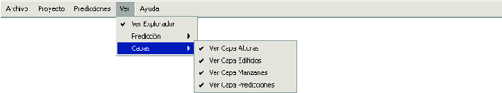

Siguiente: El mapa
Subir: Componentes de la ventana
Anterior: Componentes de la ventana
Índice General
La barra de menú que se ilustra en la figura 2
permite acceder a la mayoría de las funcionalidades del programa;
las mismas se listan a continuación:
- Menú Archivo
- Abrir
- Proyecto
- Datos
- Alturas de terreno
- Manzanas
- Edificios
- Nuevo
- Guardar Proyecto
- Cerrar Proyecto
- Generador de Edificios
- Salir
- Menú Proyecto
- Editar Datos del Proyecto
- Editar Perfil de Usuario
- Crear Modelo de Propagación
- Crear Tipo de Antena
- Crear Canal de Frecuencias
- Crear Sitio
- Menú Predicciones
- Realizar Predicción
- Verificar Línea de Vista
- Abrir Predicción
- Guardar Predicción
- Quitar Predicción
- Ver Información de Predicción
- Análisis de error
- Menú Ver
- Ver Explorador
- Predicción
- Ver Potencia
- Ver C/I
- Ver Cobertura
- Capas
- Ver Capa Alturas
- Ver Capa Edificios
- Ver Capa Manzanas
- Ver Capa Predicciones
- Menu Ayuda
- Acerca de...
- Manual de Usuario
- Documentación
Figura 2:
La barra de menú de SAPO
|

|
Siguiente: El mapa
Subir: Componentes de la ventana
Anterior: Componentes de la ventana
Índice General
SAPO